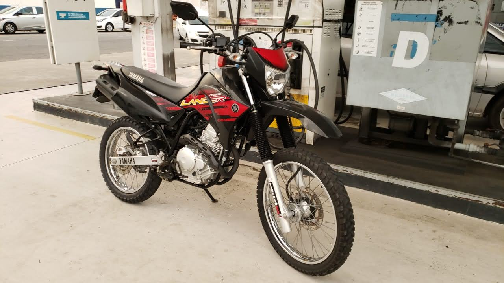

Últimas Notícias
Veículos usados e preço do combustível despencam em João Pessoa - PB
Nos últimos meses, a cidade de João Pessoa, na Paraíba, tem vivido uma reviravolta no mercado de veículos usados e no preço dos combustíveis, proporcionando alívio para muitos consumidores. A queda acentuada nos preços de carros e motos usados, aliada à redução no valor do combustível, tem sido vista como um reflexo de ajustes econômicos e de uma maior oferta no mercado local.
Segundo especialistas do setor automotivo, o aumento de veículos novos à disposição no mercado, impulsionado por incentivos fiscais e programas de financiamento mais acessíveis, resultou numa oferta significativa de carros usados. Com mais pessoas trocando seus veículos por modelos mais recentes, os lojistas tiveram que ajustar os preços dos usados para garantir competitividade. Modelos que antes estavam fora do orçamento de muitos consumidores agora estão acessíveis, com descontos que chegam até 20% em relação aos valores praticados no início do ano.
"Há seis meses, um carro popular de 2015 custava em média R$ 35.000, mas hoje esse mesmo modelo pode ser encontrado por R$ 28.000 ou menos", comenta Paulo Mendonça, dono de uma revendedora no bairro de Manaíra. Ele também destaca que veículos mais antigos, como modelos de 2010, estão com preços ainda mais atrativos, tornando-se uma opção popular para quem busca economia.
Além disso, o preço do combustível em João Pessoa tem mostrado uma tendência de queda. Após picos que chegaram a assustar os motoristas no início do ano, com a gasolina ultrapassando os R$ 7,00 por litro, a situação parece estar se estabilizando. Nas últimas semanas, postos de combustíveis na capital paraibana exibem valores entre R$ 5,80 e R$ 6,00 por litro de gasolina, um alívio que já se reflete no bolso dos consumidores. Os especialistas atribuem essa queda à estabilização dos preços internacionais do petróleo e ao aumento da concorrência entre os postos da cidade, o que beneficia diretamente os motoristas.
Com preços mais baixos nos veículos usados e combustíveis mais acessíveis, João Pessoa vive um momento favorável para quem deseja adquirir um automóvel ou economizar nas despesas com transporte. Muitos moradores aproveitam a oportunidade para trocar de carro ou renovar a sua frota, enquanto a expectativa é de que essas reduções se mantenham nos próximos meses.